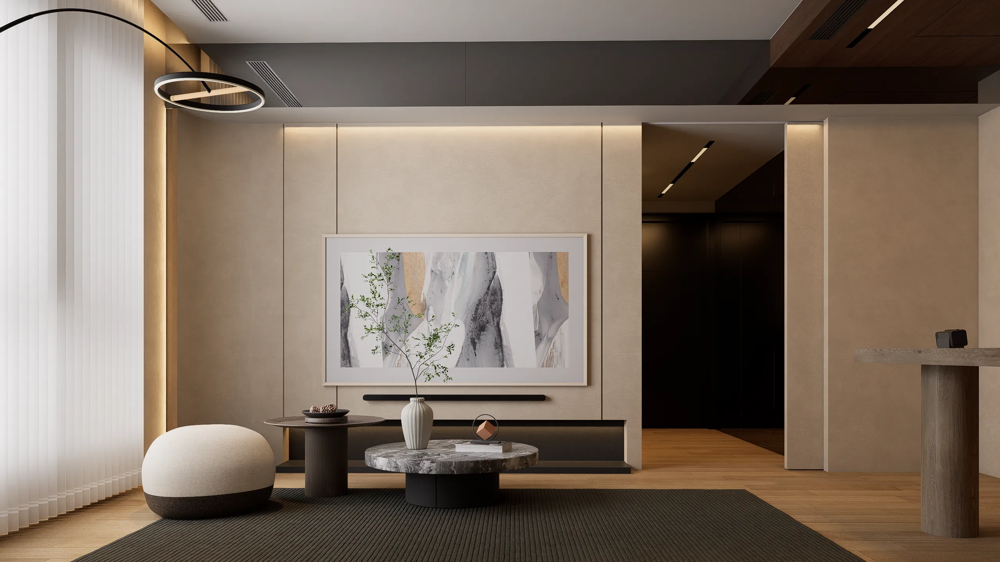
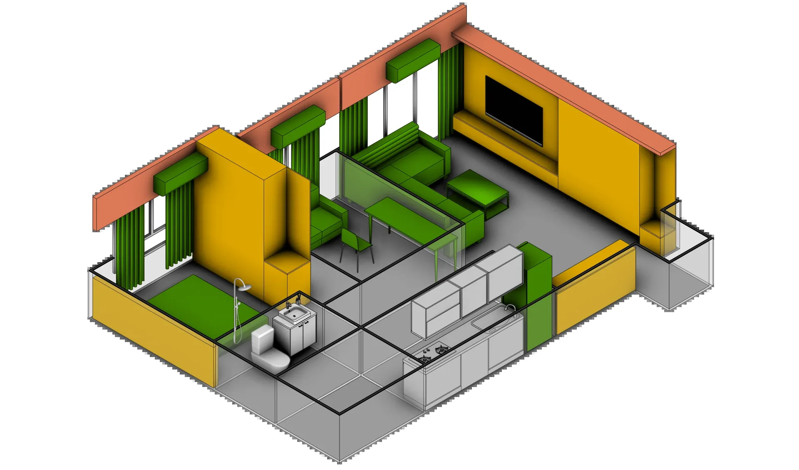
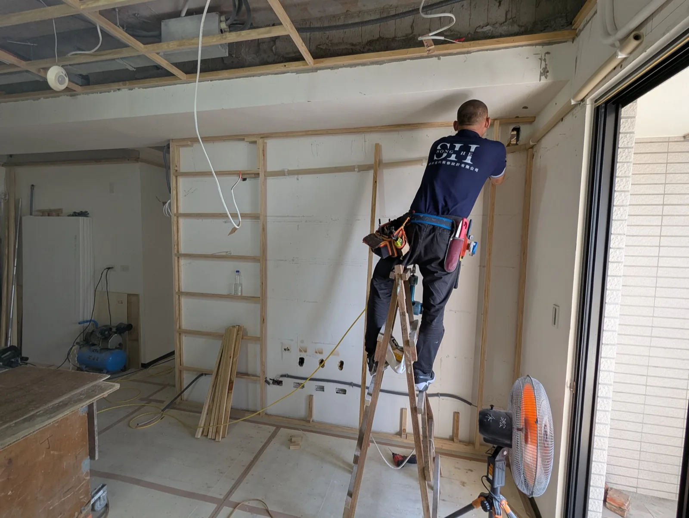

新成屋設計
從格局、動線、收納、照明到材料搭配，建立符合家庭生活方式的完整空間。
新成屋裝潢怎麼開始？
除了完工後的樣子，我們也記錄每個案子的現場條件、設計判斷與材料細節。以下是幾個精選住宅案例。
先了解你怎麼生活，再把美感、機能、預算和施工條件放在同一張桌上討論，讓設計與工程從一開始就在同一個方向上。
從格局、動線、收納、照明到材料搭配，建立符合家庭生活方式的完整空間。
新成屋裝潢怎麼開始？依屋況檢視拆除、水電、泥作、木作與設備需求，美感之外，也處理老屋真正的限制。
老屋翻新先做什麼？由同一設計端統整圖面、材料、預算與施工介面，少一點訊息落差，少一點現場猜測。
設計師與統包怎麼選？

玥森的設計思維，來自不同設計領域的累積。
在投入住宅空間設計之前，我們曾參與品牌與視覺設計，並在獲得國內外設計獎項的專業團隊中，累積對比例、色彩、材質與整體體驗的理解。
這些經驗延伸到台中住宅室內設計。我們先理解居住者的生活方式，再透過光線、材質、動線與收納建立秩序，讓空間在多年之後依然自然、耐看、適合生活。
已完成公司設立登記。
將工程管理的專業帶入材料規格、施工順序與現場銜接，使設計判斷能夠被穩定落實。
淬鍊空間本質，重塑生活美學。已簽約客戶登入 ↗
分享案場、家庭成員、期待與預算方向，確認彼此是否合適。
確認屋況與服務範圍，進入格局、收納、風格及圖面發展。
逐項討論材料規格與取捨，把影響使用及施工的地方說清楚。
依確認圖面與材料規格安排施工，持續核對現場、施工順序與不同工種的銜接。
逐項確認完成狀況，讓新家從「看起來好」走到「真正住得好」。
每個案件的屋況、範圍及工期不同，實際流程與交付內容以雙方確認及正式合約為準。
裝修指南依「裝修起步、系統櫃、木作工程」分類。先選主題，再找真正需要閱讀的文章。
台中屋主必讀進入裝修指南→最新文章 · ：台中裝修客廳照明規劃 ／ 台中小坪數裝潢配置
「室內裝修」不只是一般的品牌用語。新設立的室內裝修業，公司或商業名稱需標示「室內裝修」，並依業務範圍配置合格的專業技術人員，向內政部申請登記、領得室內裝修業登記證後，才能執行相應的室內裝修業務。
名稱有「設計」，不等於已取得室內裝修業資格；屋主除了看公司名稱，也可確認其室內裝修業登記證、專業技術人員與核准的執業範圍。
先把總預算分成基礎工程、固定櫃體與木作、家具家電、預備金四部分，並確認報價是否包含設計、工程管理、稅金與清運。每戶格局、建材與收納量不同，先定義範圍比直接套用一個坪數單價更準確。
時間會受坪數、修改次數、工程範圍、社區申請、材料交期與工班檔期影響。建議從希望入住日往前倒推，除了施工，也要保留需求整理、設計、報價、選材、清潔與修正時間。
新成屋可在預計交屋前開始了解與接洽；老屋則建議在預計動工前，保留更充裕的屋況評估、設計與報價時間。
如果預售屋想趁建商客變期調整格局、插座或給排水，建議在建商通知客變後盡快聯絡設計師，才有時間整理需求並配合截止日；能在建造階段先完成的調整，通常可減少交屋後拆除重作的費用與麻煩。若已錯過客變期也不代表不能改，但交屋後重做通常需要較多預算與工期，也要再確認現場及社區的施工限制。
先提供案場地區、房屋類型、室內坪數、預計交屋時間與預算方向即可。資料還不齊也沒關係，不確定的項目可以先寫「待確認」。
相同品名背後，仍可能有用量、規格、五金配置、施工範圍與責任歸屬的差異。我們鼓勵比較，但建議在相同服務範圍與材料規格下比較。
以台中及鄰近縣市的住宅為主，聚焦新成屋、老屋翻新與整體設計工程。若是局部或單一空間，也可以先提供範圍，由我們一起確認是否適合協助。
不用。初步溝通的目的，是先釐清需求、預算、時程與合作方式。裝修值得好好比較，我們不會要求你在初談當下立即簽約。
先提供以下五項資料，讓我們了解你的裝修方向。還沒確定的項目，可以先寫「待確認」。